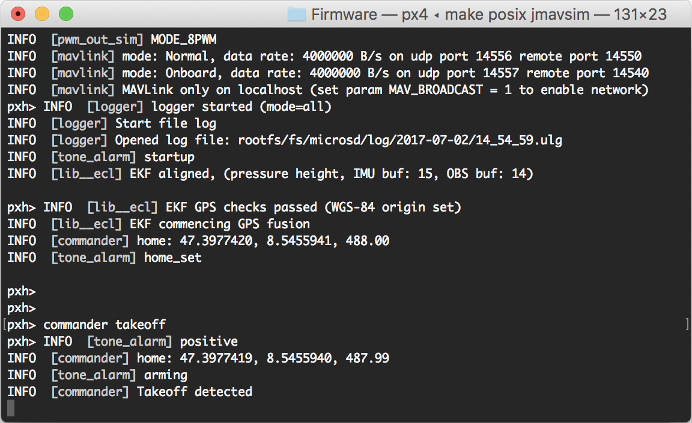
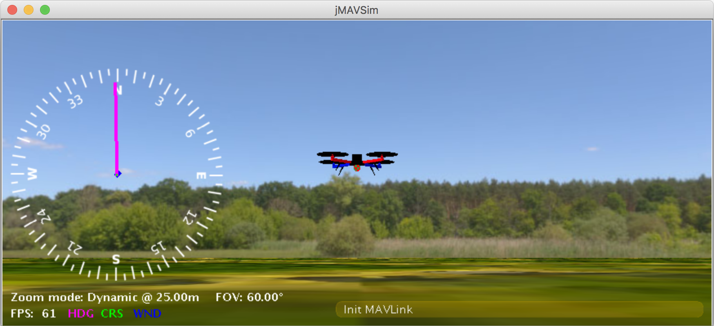
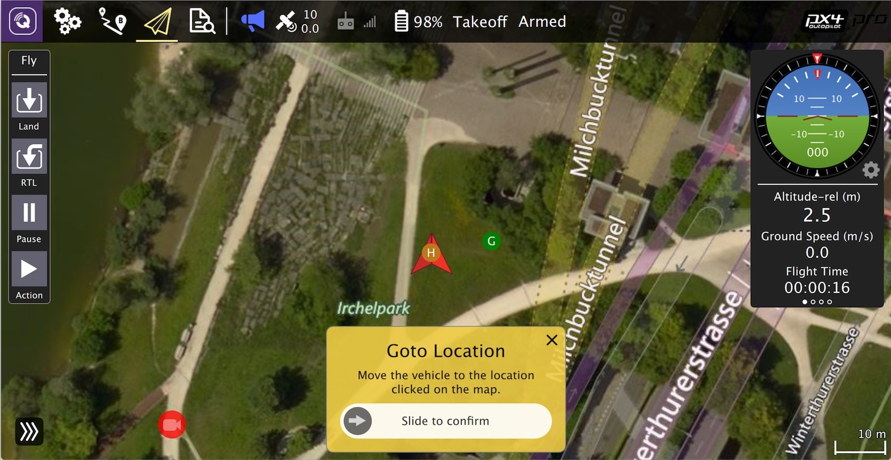
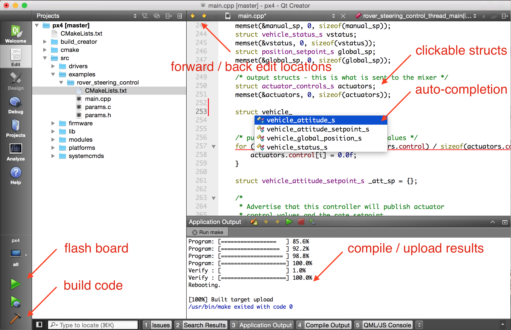

PX4 소프트웨어 빌드
PX4는 모의시험 환경과 하드웨어 타겟 모두에 대해 콘솔 또는 IDE 환경에서 빌드할 수 있습니다.
다음 절차를 따르기 전에 우선 개발자 툴체인을 호스트 운영 체제와 타겟 하드웨어용으로 설치해야합니다.
일반 빌드 문제에 대한 해결책은 하단의 문제 해결 부준을 참고하십시오.
PX4 소스 코드 다운로드
PX4 소스 코드는 github의 PX4/Firmware 저장소에 있습니다. 가장 최신의 버전을 컴퓨터에 받으려면, 다음 명령을 터미널에 입력하십시오:
git clone https://github.com/PX4/Firmware.git --recursive
이 방법이 최신 코드를 빌드하는데 필요한 모든 과정입니다. PX4에 기여할 목적의 더 많은 git 활용 내용은 git 예제 > PX4에 코드 기여하기 에 있습니다.
첫 빌드 (jMAVSim 모의시험 환경 활용)
우선 콘솔 환경에서 모의시험 환경을 빌드하겠습니다. 모의시험 환경은 실제 하드웨어와 IDE로 옮겨가기 전 시스템 설정을 검증할 수 있게 합니다.
Firmware 디렉터리를 찾아간 후 다음 명령으로 jMAVSim을 시작하십시오:
make px4_sitl jmavsim
이 명령으로 다음의 PX4 콘솔을 띄웁니다:

다음 명령을 입력하면 드론이 날 수 있습니다:
pxh> commander takeoff

commander land 명령으로 드론을 착륙할 수 있으며 모의시험 환경은 CTRL+C 키 입력(또는 shutdown 명령 입력)으로 멈출 수 있습니다.
지상 관제 스테이션에서의 비행체 모의시험은 실제 비행체 운용과 거의 흡사합니다. 비행체가 날고 있을 때(비행체 이륙 모드) 지도에서 위치를 누르고 슬라이더를 활성화합니다. 이 동작을 통해 비행체의 위치를 바꿉니다.

가제보(Gazebo) 모의시험 환경, AirSim 모의시험 환경과 같은 다른 여러 모의시험 환경에서도 PX4를 활용할 수 있습니다. 이들 역시 make 명령으로 시작합니다. 예를 들면:
make px4_sitl gazebo
NuttX / Pixhawk 기반 보드
빌드
NuttX- 또는 Pixhawk- 기반 보드용으로 빌드하려면 Firmware 디렉토리를 탐색한 후 보드에 해당하는 빌드 타겟을 찾아 make를 호출하십시오.
예를 들어 Pixracer 용으로 빌드하려면 다음 명령을 사용하십시오:
cd Firmware
make px4_fmu-v4_default
위 예제에서 빌드 타겟의 처음 부분인
px4_fmu-v4는 비행체 제어부 하드웨어 일부 기종용 펌웨어 이름이며,default는 설정 이름입니다 (이 경우 "default" 설정입니다).default는 선택 사항이기에, 대신 다음 명령을 실행할 수 있습니다:make px4_fmu-v4
성공적인 실행시 다음 출력 내용으로 끝납니다:
-- Build files have been written to: /home/youruser/src/Firmware/build/px4_fmu-v4_default
[954/954] Creating /home/youruser/src/Firmware/build/px4_fmu-v4_default/px4_fmu-v4_default.px4
다음 목록은 일반 보드에서의 빌드 명령을 보여줍니다:
- Pixhawk 4:
make px4_fmu-v5_default - Pixhawk 4 Mini:
make px4_fmu-v5_default - CUAV V5+:
make px4_fmu-v5_default - CUAV V5 nano:
make px4_fmu-v5_default - Holybro Kakute F7:
make holybro_kakutef7_default - Pixracer:
make px4_fmu-v4_default - Pixhawk 3 Pro:
make px4_fmu-v4pro_default - Pixhawk Mini:
make px4_fmu-v3_default - Cube Black:
make px4_fmu-v3_default - Cube Yellow:
make hex_cube-yellow - Cube Orange:
make hex_cube-orange - mRo Pixhawk:
make px4_fmu-v3_default(2MB 플래시 메모리 지원) - HKPilot32:
make px4_fmu-v2_default - Pixfalcon:
make px4_fmu-v2_default - Dropix:
make px4_fmu-v2_default - MindPX/MindRacer:
make airmind_mindpx-v2_default - mRo X-2.1:
make mro_x21_default - Crazyflie 2.0:
make bitcraze_crazyflie_default - Intel® Aero Ready to Fly Drone:
make intel_aerofc-v1_default - Pixhawk 1:
make px4_fmu-v2_default> Warning 이 보드를 대상으로 빌드하려면 지원하는 GCC 버전(예: CI/docker에서 사용하는 버전과 동일)을 활용 해야 하거나, 빌드에서 모듈을 제거해야합니다. 지원하지 않는 버전의 GCC 로 빌드하면, PX4 보드의 1MB 플래시 용량 제한에 가까워져 실패할 수 있습니다. - 2 MB flash의 Pixhawk 1:
make px4_fmu-v3_default
보통
_default접미사는 선택 입력사항입니다 (예:make px4_fmu-v4,make bitcraze_crazyflie, 등의 명령으로도 빌드할 수 있습니다.).
펌웨어 업로드 (보드 플래싱)
make 명령에 upload를 붙여 컴파일한 바이너리를 USB 연결을 거쳐 자동 비행 하드웨어로 업로드하십시오. 예를 들면,
make px4_fmu-v4_default upload
성공적인 실행시 다음 출력 내용으로 끝납니다:
Erase : [====================] 100.0%
Program: [====================] 100.0%
Verify : [====================] 100.0%
Rebooting.
[100%] Built target upload
기타 보드
다음 보드는 빌드 또는 배포 방법이 좀 더 복잡합니다.
라즈베리 파이 2/3 보드
아래 명령으로 Raspberry Pi 2/3 Navio2 대상 바이너리를 빌드합니다.
교차 컴파일러 빌드
다음 명령으로 라즈베리 파이에 IP(또는 호스트 이름)을 설정하십시오:
export AUTOPILOT_HOST=192.168.X.X
또는
export AUTOPILOT_HOST=pi_hostname.domain
환경 변수 값을 빌드 전에 설정하지 않으면,
make upload명령 실행시 라즈베리 파이 찾기에 실패합니다.
실행 파일을 만드십시오:
cd Firmware
make emlid_navio2 # for cross-compiler build
"px4" 실행 파일은 build/emlid_navio2_default/ 디렉터리에 있습니다. 라즈베리 파이에 SSH 연결이 가능한지 확인하시고 라즈베리 파이 접근 방법을 살펴보십시오.
다음 명령으로 업로드하십시오:
cd Firmware
make emlid_navio2 upload # for cross-compiler build
그리고 SSH를 통해 (루트 계정으로) 접근 후 다음 명령을 실행하십시오:
sudo ./bin/px4 -s px4.config
자체 빌드
라즈베리 파이에서 직접 빌드할 경우, 자체 빌드 대상을 찾으려 할 것입니다(emlid_navio2_native).
cd Firmware
make emlid_navio2_native # for native build
"px4" 실행 파일은 build/emlid_navio2_native/ 디렉터리에 있습니다. 다음 명령으로 실행하십시오:
sudo ./build/emlid_navio2_native/px4 -s ./posix-configs/rpi/px4.config
px4를 실행하여 나타난 성공적인 빌드 화면은 다음과 같습니다:
<br />______ __ __ ___
| ___ \ \ \ / / / |
| |_/ / \ V / / /| |
| __/ / \ / /_| |
| | / /^\ \ \___ |
\_| \/ \/ |_/
px4 starting.
pxh>
자동 시작
PX4를 자동으로 시작하려면 다음 실행 명령을 /etc/rc.local의 exit 0 행 바로 전에 추가하십시오(자체적으로 빌드했다면, 적당한 명령으로 수정하십시오):
cd /home/pi && ./bin/px4 -d -s px4.config > px4.log
OcPoC-Zynq Mini
OcPoC-Zynq Mini 빌드 절차는 다음 문서에서 다룹니다:
QuRT / 스냅드래곤 기반 보드
이 절에서는 Qualcomm Snapdragon Flight용 빌드 방법을 알려드립니다.
빌드
(UART 기반) 퀄컴 ESC 보드를 사용한다면, 이곳 절차를 따르십시오. PWM기반 일반 ESC 보드를 사용한다면 이 페이지의 다음 과정을 계속 따르는 것이 좋습니다.
아리 명령은 리눅스와 DSP 쪽 대상을 빌드합니다. 두 실행 파일은 muORB 기반으로 통신합니다.
cd Firmware
make atlflight_eagle_default
장치의 소프트웨어를 불러오려면 USB 케이블로 연결하고 장치를 부팅했는지 확인하십시오. 이 명령을 새 터미널 창에서 실행하십시오:
adb shell
이전 터미널로 돌아가서 다음 명령으로 업로드하십시오:
make atlflight_eagle_default upload
참고로 이 명령은 mainapp.config 설정 파일과 px4.config 설정 파일을 장치에 복사(그리고 덮어쓰기)하기도 합니다. 이 파일은 각각 /usr/share/data/adsp/px4.config 와 /home/linaro/mainapp.config에 위치합니다. 운송 장비의 시작 스크립트를 직접 편집하려는 경우 참고하십시오.
현재 믹서 설정은 직접 복사해야 합니다:
adb push ROMFS/px4fmu_common/mixers/quad_x.main.mix /usr/share/data/adsp
실행
DSP 디버깅 모니터를 실행하십시오:
${HEXAGON_SDK_ROOT}/tools/debug/mini-dm/Linux_Debug/mini-dm
Note: 대신, Mac에서는 nano-dm을 활용할 수도 있습니다.
ADB 셸로 돌아가서 px4를 실행하십시오:
cd /home/linaro
./px4 -s mainapp.config
px4는 USB 케이블을 뽑으면(또는 ssh 세션을 끊으면) 바로 멈춥니다. 비행을 진행하려면, 부팅 후 px4를 자동으로 실행하게 하십시오.
자동 시작
스냅드래곤을 부팅하자마자 px4를 실행하려면, rc.local에 시작 스크립트를 추가할 수 있습니다:
스냅드래곤 보드의 /etc/rc.local 파일을 직접 편집하거나:
adb shell
vim /etc/rc.local
컴퓨터에 파일을 복사하여 편집 후, 스냅드래곤 보드로 다시 복사하십시오:
adb pull /etc/rc.local
gedit rc.local
adb push rc.local /etc/rc.local
자동으로 시작하려면 다음 행을 exit 0 전에 추가하십시오:
(cd /home/linaro && ./px4 -s mainapp.config > mainapp.log)
exit 0
rc.local을 실행할 수 있게 설정했는지 확인하십시오:
adb shell
chmod +x /etc/rc.local
그 다음 스냅드래곤 보드를 다시 부팅하십시오:
adb reboot
그래픽 IDE에서의 컴파일
PX4 시스템은 Qt 크리에이터, 이클립스, 서브라임 텍스트를 지원합니다. Qt 크리에이터는 사용자에게 매우 친숙한 버전이므로 이 프로그램만 공식적으로 IDE를 지원합니다. 이클립스 또는 서브라임을 전문적으로 활용할 줄 모른다면, 활용하지 않는걸 권합니다. 하드코어 사용자는 이클립스 프로젝트와 서브라임 프로젝트를 소스트리에서 찾을 수 있습니다.
Qt Creator 기능
Qt 크리에이터는 누를 수 있는 심볼, 완전 코드 기반 자동 완성, 펌웨어 빌드, 플래싱을 지원합니다.

리눅스용 Qt Creator
Qt 크리에이터 시작 전 project 파일을 만들어야 합니다:
cd ~/src/Firmware
mkdir ../Firmware-build
cd ../Firmware-build
cmake ../Firmware -G "CodeBlocks - Unix Makefiles"
파일 > 파일 또는 프로젝트 열기로 펌웨어 폴더 루트의 CMakeLists.txt 파일을 불러오십시오 (CMakeLists.txt 파일 선택).
불러온 다음, play 단추를 누르면 실행 대상 설정에서 '개별 실행파일'을 선택하고 'make' 명령을 실행 명령으로, 'upload'을 인자 값으로 넣어 프로젝트를 실행하는 방식으로 설정할 수 있습니다.
Windows용 Qt Creator
윈도우에서는 Qt 크리에이터로 PX4 개발을 시험해보지 않았습니다.
Mac OS용 Qt Creator
Qt 크리에이터 시작 전 project 파일을 만들어야 합니다:
cd ~/src/Firmware
mkdir -p build/creator
cd build/creator
cmake ../.. -G "CodeBlocks - Unix Makefiles"
이제 됐습니다! Qt 크리에이터를 시작하고 아래 동영상에서 설명하는 단계를 완료하여 프로젝트 빌드 설정을 완료하십시오.
PX4 make 빌드 타겟
앞 절에서는 make를 호출하여 제각기 다른 타겟을 빌드하고, 모의시험 환경을 시작하고 IDE를 활용하는 방법을 다루었습니다. 이 절에서는 make 옵션을 구성하는 방법과 존재하는 선택지를 찾는 방법을 다루도록 하겠습니다.
일부 설정과 초기화 파일로 make를 호출하는 완전한 문법은 다음과 같습니다:
make [VENDOR_][MODEL][_VARIANT] [VIEWER_MODEL_DEBUGGER_WORLD]
VENDOR_MODEL_VARIANT: (CONFIGURATION_TARGET 으로도 알려짐)
- VENDOR: 보드의 제조사:
px4,aerotenna,airmind,atlflight,auav,beaglebone,intel,nxp등. 픽스호크 계열 보드 제조사 이름은px4입니다. - MODEL: 보드 "모델":
sitl,fmu-v2,fmu-v3,fmu-v4,fmu-v5,navio2등. - VARIANT: 개별 일부 설정을 나타냅니다. 예:
default설정에 일부 구성요소가 들어있지 않는rtps,lpe. 대부분default를 사용하며, 생략합니다.
아래 명령으로 모든 가용
CONFIGURATION_TARGET옵션을 확인해볼 수 있습니다:sh make list_config_targets
VIEWER_MODEL_DEBUGGER_WORLD:
VIEWER:
gazebo,jmavsim에 연결할 모의실험 환경("viewer")MODEL: 모의시험 환경에서 불러와서 활용할 운송 수단 모델(예:
iris(default),rover,tailsitter등). 적절한 매개변수를 선택하는 시작 스크립트에서 활용할 선택 모델을PX4_SIM_MODEL환경 변수로 설정합니다.DEBUGGER: 활용 디버거
none(default),ide,gdb,lldb,ddd,valgrind,callgrind. 자세한 내용은 모의시험 환경 디버깅을 살펴보십시오.- WORLD: (가제보 전용). 불러온 월드(PX4/sitl_gazebo/worlds)를 설정합니다. 기본값은 empty.world입니다. 자세한 내용은 가제보 > 지정 월드 불러오기를 살펴보십시오.
아래 명령으로 모든 가용
VIEWER_MODEL_DEBUGGER_WORLD옵션을 확인할 수 있습니다:sh make px4_sitl list_vmd_make_targets
참고:
CONFIGURATION_TARGET변수와VIEWER_MODEL_DEBUGGER변수의 대부분의 값은 기본값이기에, 다른 값으로의 설정은 선택입니다. 예를 들어gazebo는gazebo_iris또는gazebo_iris_none과 동일합니다.- 두개의 다른 설정 사이에 기본값을 지정하려면 밑줄 문자를 셋 사용할 수 있습니다. 예를 들면,
gazebo___gdb는gazebo_iris_gdb와 동일합니다. - PX4를 시작한 후 모의시험 환경의 동작을 기다리려면
VIEWER_MODEL_DEBUGGER에none값을 사용할 수 있습니다. 예로,make px4_sitl_default none명령을 사용하는 PX4와./Tools/jmavsim_run.sh -l명령을 사용하는 jMAVSim을 시작하려면:
VENDOR_MODEL_VARIANT 옵션은 PX4 소스 트리의 /boards 디렉터리에서 cmake 설정 파일 일부에 대응합니다. 특히 VENDOR_MODEL_VARIANT는 boards/VENDOR/MODEL/VARIANT.cmake에 대응합니다 (예: px4_fmu-v5_default는 boards/px4/fmu-v5/default.cmake에 대응)
다음 절에서 추가 make 타겟을 다루도록 하겠습니다 (완전한 목록은 아님):
이진 파일 크기 프로파일링
bloaty_compare_master 빌드 대상은 코드 규모가 바뀌었을 때 미치는 영향을 잘 이해할 수 있게 합니다. 이 명령을 활용하면 툴체인은 일부 펌웨어에 대해 최근 성공한 마스터 브랜치의 빌드를 다운로드하고 로컬 빌드와 비교합니다(이진 파일에 대한 bloaty 용량 프로파일러를 활용).
이 과정을 통해
px4_fmu-v2_default빌드 대상이 (아마도) 1MB 플래시 용량 제한에 걸리는 원인 변경을 분석할 수 있습니다.
여러분이 지정한 경로상에 bloaty가 있어야 하며 cmake 설정 시간에 찾을 수 있어야 합니다. PX4 도커 파일에 bloaty를 다음과 같이 설치합니다:
git clone --recursive https://github.com/google/bloaty.git /tmp/bloaty \
&& cd /tmp/bloaty && cmake -GNinja . && ninja bloaty && cp bloaty /usr/local/bin/ \
&& rm -rf /tmp/*
아래 예제에서는 px4_fmu-v2_default 빌드에서 mpu9250 드라이버를 제거하는 방법을 보여줍니다: 우선 자체적으로 드라이버 없이 빌드를 설정합니다:
% git diff
diff --git a/boards/px4/fmu-v2/default.cmake b/boards/px4/fmu-v2/default.cmake
index 40d7778..2ce7972 100644
--- a/boards/px4/fmu-v2/default.cmake
+++ b/boards/px4/fmu-v2/default.cmake
@@ -36,7 +36,7 @@ px4_add_board(
imu/l3gd20
imu/lsm303d
imu/mpu6000
- imu/mpu9250
+ #imu/mpu9250
#iridiumsbd
#irlock
#magnetometer # all available magnetometer drivers
이후 make 대상을 활용하여 비교할 대상 빌드(이 경우, px4_fmu-v2_default)를 비교하면:
% make px4_fmu-v2_default bloaty_compare_master
...
...
...
VM SIZE FILE SIZE
-------------- --------------
[DEL] -52 MPU9250::check_null_data(unsigned int*, unsigned char) -52 [DEL]
[DEL] -52 MPU9250::test_error() -52 [DEL]
[DEL] -52 MPU9250_gyro::MPU9250_gyro(MPU9250*, char const*) -52 [DEL]
[DEL] -56 mpu9250::info(MPU9250_BUS) -56 [DEL]
[DEL] -56 mpu9250::regdump(MPU9250_BUS) -56 [DEL]
... -336 [DEL]
[DEL] -344 MPU9250_mag::_measure(ak8963_regs) -344 [DEL]
[DEL] -684 MPU9250::MPU9250(device::Device*, device::Device*, char const*, char const*, cha -684 [DEL]
[DEL] -684 MPU9250::init() -684 [DEL]
[DEL] -1000 MPU9250::measure() -1000 [DEL]
-41.3% -1011 [43 Others] -1011 -41.3%
-1.0% -1.05Ki [Unmapped] +24.2Ki +0.2%
-1.0% -10.3Ki TOTAL +14.9Ki +0.1%
위 화면에서는 mpu9250을 px4_fmu-v2_default 펌웨어에서 제거하여 플래시 메모리의 10.3kB 용량을 저장함을 나타냅니다. 또한, mpu9250 드라이버의 기타 부분 용량을 나타냅니다.
펌웨어 버전과 git 태그
PX4 펌웨어 버전과 개별 펌웨어 버전 은 MAVLink의 AUTOPILOT_VERSION 메시지로 내보내며, QGroundControl의 설정 > 요약 에어프레임 패널에 나타납니다:

이 정보는 활성 git tag 또는 저장소 트리로부터 빌드 시간에 추출합니다. git 태그는 <PX4-version>-<vendor-version> (예: 위 이미지에서 태그를 v1.8.1-2.22.1로 설정) 과 같은 형태를 가져야합니다.
다른 git 태그 형식을 취하면 버전 정보를 제대로 나타내지 못합니다.
문제 해결
일반 빌드 오류
하위 모듈의 불일치, 빌드 환경의 완전하지 못한 정리상태로 인해 여러 빌드 문제가 나타납니다. 하위 모듈을 업데이트하고 distclean을 실행하면 이런 오류를 잡아낼 수 있습니다:
git submodule update --recursive
make distclean
Flash overflowed by XXX bytes
region 'flash' overflowed by XXXX bytes 오류는 대상 하드웨어 플랫폼에 비해 펌웨어 크기가 너무 큼을 나타냅니다. 이 오류는 make px4_fmu-v2_default 대상을 빌드할 때 일반적인데, 이 하드웨어의 경우 플래시 메모리 용량은 1MB로 제한적입니다.
바닐라 마스터 브랜치를 빌드할 경우, 대부분의 원인은 지원하지 않는 GCC 버전의 사용에 있습니다. 이 경우 개발자 툴체인의 설명에서 지정한 버전을 설치하시면 됩니다.
여러분의 자체 브랜치를 빌드할 경우, 늘어나는 펌웨어의 용량이 1MB 제한을 넘어설 수 있습니다. 이 경우, 빌드에서 필요하지 않은 드라이버나 모듈을 제거해야합니다.
macOS: Too many open files error
MacOS에서는 기본적으로 모든 실행 프로세스에 대해 최대 256개 파일을 열 수 있습니다. PX4 빌드 시스템에서는 수많은 파일을 열게 되므로, 이 갯수를 초과할 수도 있습니다.
이 경우 빌드 툴체인에서 파일을 지정 갯수보다 많이 열었을 때, 아래와 같이 Too many open files 오류 메시지를 출력할 수 있습니다:
/usr/local/Cellar/gcc-arm-none-eabi/20171218/bin/../lib/gcc/arm-none-eabi/7.2.1/../../../../arm-none-eabi/bin/ld: cannot find NuttX/nuttx/fs/libfs.a: Too many open files
최대 개방 파일 갯수를 늘리면 이 문제를 해결할 수 있습니다(예: 300). macOS 에서는 각 터미널 세션별로 이 과정을 수행할 수 있습니다:
- Tools/mac_set_ulimit.sh 스크립트를 실행하거나
- 다음 명령을 입력하십시오
sh ulimit -S -n 300
macOS Catalina: Problem running cmake
macOS 카탈리나 10.15.1 에서는 cmake를 실행하여 모의시험 환경 빌드를 시도할 경우 이런 문제가 발생할수 있습니다. 이 플랫폼에서 빌드 문제가 생긴다면 다음 명령을 터미널에서 실행하십시오:
xcode-select --install
sudo ln -s /Library/Developer/CommandLineTools/SDKs/MacOSX.sdk/usr/include/* /usr/local/include/
Failed to import Python packages
make px4_sitl jmavsim 명령을 실행할 때 나타나는 "Failed to import" 오류는 일부 파이썬 꾸러미를 설치하지 않았(다고 예상)음을 나타냅니다.
Failed to import jinja2: No module named 'jinja2'
You may need to install it using:
pip3 install --user jinja2
이 의존 요소를 이미 설치했을 경우 컴퓨터에 하나 이상의 파이썬 버전을 설치하고 (예: Python 2.7.16 과 Python 3.8.3) 빌드 툴체인에서 설치하는 해당 버전이 없는 경우입니다.
이 경우 다음과 같이 의존 요소를 명백하게 설치하면 문제를 잡을 수 있습니다:
pip3 install --user pyserial empy toml numpy pandas jinja2 pyyaml pyros-genmsg packaging